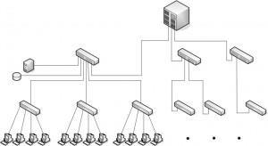
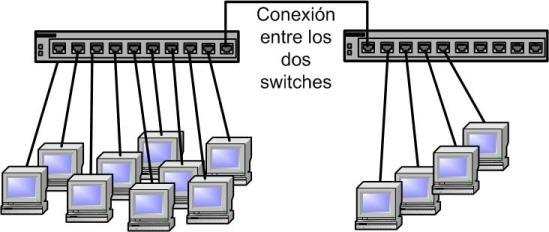
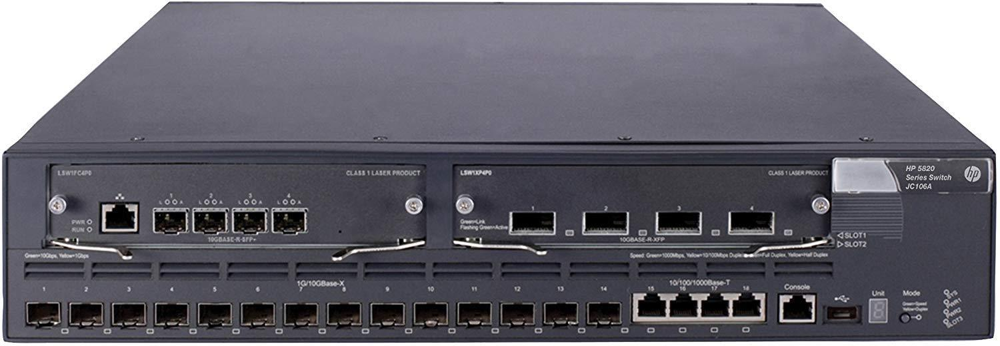
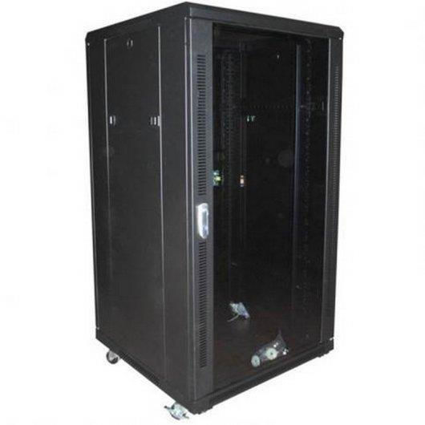

Un switch es un dispositivo de interconexión utilizado para conectar equipos en red formando lo que se conoce como una LAN.
Un switch conecta dispositivos en red. Un switch NO proporciona por si solo conectividad con otras redes y tampoco proporciona conectividad con Internet.
Funciones:
Un equipo de la red habilita la compartición de archivos y el resto de equipos pueden acceder a dichos archivos a través de la red.
Todos los equipos de la red pueden utilizar la misma impresora.
Todos los equipos pueden acceder a Internet a través de router de acceso, que está conectado en la red. Aunque para eso es necesario un router, los router implementan un switch para hacer esta labor.
La variedad que existen de switchs en el mercado en tan amplia que podemos encontrar switchs por 10€ o incluso hasta por más de 10.000€, con esto nos podemos hacer una idea de la amplia variedad que existe en este mercado.
Son los que están en el núcleo central de las grandes redes
Son los que están en un nivel inferior, en cuanto a jerarquía, en la red local y suelen ser los que están conectados a los equipos de los usuarios.
Ofrece unas características extras las cuales hacen que el precio del mismo se incremente y también estas requieren una configuración extra
Son todo lo contrario, no cuestan tanto como los gestionables, pero tienen características básicas.
Ahora que tenemos estos conceptos claros podemos proceder a explicar los tipos de switchs que existen.
Es el más básico de todos sin duda, su uso se da en casas y en pequeñas empresas. No se pueden montar en un rack debido a sus dimensiones, no necesitan configuración.
Se utilizan para crear redes de pequeño tamaño de prestaciones medias. No admiten opciones de configuración y suelen tener características similares a los switchs de escritorio, pero incrementando el número de puertos y ofreciendo la posibilidad de montaje en rack.
Se utiliza para la conexión de los equipos de los usuarios en redes de tamaño medio y grande, y se localizan en el nivel jerárquico inferior. Es necesario que estos switchs ofrezcan características avanzadas de configuración y gestión.
Están diseñados para formar el núcleo de una red de tamaño medio. Proporcionan altas prestaciones y funcionalidades avanzadas.
La principal característica de este tipo es su alta modularidad. Se utilizan en grandes redes corporativas o de campus.
La función básica que realiza un switch se conoce como conmutación y consiste en trasferir datos entre los diferentes dispositivos de la red. Para ello usan las cabeceras de las tramas Ethernet.
Guardan en una tabla las direcciones MAC de todos los dispositivos conectados junto con el puerto en el que están conectados, de forma que cuando llega una trama al switch, dicha trama se envía al puerto correspondiente.
Son zonas de memoria donde las tramas son almacenadas antes de ser reenviadas al puerto correspondiente. Esta característica permite al switch conectar puertos que trabajen a diferentes velocidades.
Los buffers pueden ser implementados en la salida de los puertos, en la entrada de los puertos o una combinación de ambos. Lo más habitual es implementarlos en la salida.
Los buffers se implementan en memorias RAM integradas en la circuitería del dispositivo.
Existen dos técnicas:
Cuando un switch comienza a recibir datos por un puerto no espera a leer la trama completa para reenviarla al puerto destino. En cuanto lee la dirección de destino de la trama MAC comienza a transferir los datos al puerto destino.
Proporciona unos tiempos de retardo bastante bajos, sin embargo, sólo puede usarse cuando las velocidades de todos los puertos son iguales.
Debido a su forma de funcionamiento los switchs propagan tramas erróneas o tramas afectadas por colisiones.
Cuando un switch recibe datos por un puerto, almacena la trama completa en el buffer para luego reenviarla al puerto destino. Permite realizar comprobaciones antes de ser enviada al puerto de destino.
El tiempo de retardo introducido es variable ya que depende del tamaño de la trama, aunque suele ser superior al proporcionado por la otra técnica.
La función básica que llevan a cabo los switchs no necesita ninguna configuración manual. Una de las características incluidas en el estándar Ethernet es la auto negociación. Esta función permite que se establezca un diálogo entre el switch y cualquier equipo que se conecte a uno de sus puertos.
Las funciones avanzadas que ofrecen algunos modelos, sí requieren una configuración manual.
El acceso a la configuración de dichos switchs se pueden hacer, o bien por un puerto especial de configuración, o por un servicio web interno que proporciona el propio switch.
En el primer caso es necesario conectar un PC a dicho puerto y acceder mediante algún software específico.
En el segundo caso basta con utilizar un navegador web en algún PC conectado en un puerto Ethernet del switch.
Los switchs de gama alta suelen ofrecer capacidades de enrutamiento de paquetes IP. Se les conocen como switchs de nivel 3.
Un switch de nivel 3 realiza todas las funciones de conmutación de un switch, pero además proporciona funciones de enrutamiento IP. Esta característica es especialmente útil para switchs que utilicen VLAN.
Pueden existir switchs que ofrezcan características relacionadas con funciones del nivel 4, como control de puertos.
Las redes en Ethernet siguen una topología en estrella donde el elemento central es el switch. En los casos en los que el número de equipos supera la capacidad del switch, es posible ampliar dicha capacidad conectando otro switch a la red.
Cuando el número de dispositivos de la red es alto, normalmente se sigue una cierta estructura jerárquica donde lo normal es que haya dos o tres niveles jerárquicos.
Hay diferentes tipos de marcas, como por ejemplo Cisco que es la más conocida en cuanto a las redes se refiere. A parte existen otras como:
Podemos encontrar switchs de diferentes precios, desde algo menos de 10€ hasta cerca de los 25.000€. El precio de los mismo varía en función de las características que vimos anterior, que un switch sea gestionable o no es algo también muy importante y lo cual conlleva un aumento de precio.
Este switch tiene un valor exacto de 23.138,47€, más gastos de envío claro.
Una cosa notable de los switchs es que no requieren una gran capacidad de memoria RAM, de hecho, este, que es el más caro, tiene hasta 2 GB de RAM. Una cosa que no se observa a simple vista es el peso del switch, este switch pesa 15 Kg.
Algo que también necesitaremos para poner el switch es un rack, hay racks de diferentes tamaños, por ejemplo este rack.
Además, tienen un candado para mantener los equipos seguros antes ataques físicos, un rack como este rack pesa bastante, alrededor de 70 kilos.
Estos switchs se pueden encontrar en webs como Amazon o PcComponentes, también podemos consultar la web del fabricante que te dará una compra directa o enlace a sitios de confianza que venden sus productos.